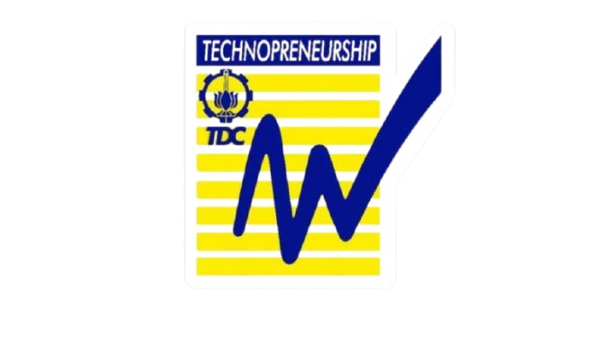
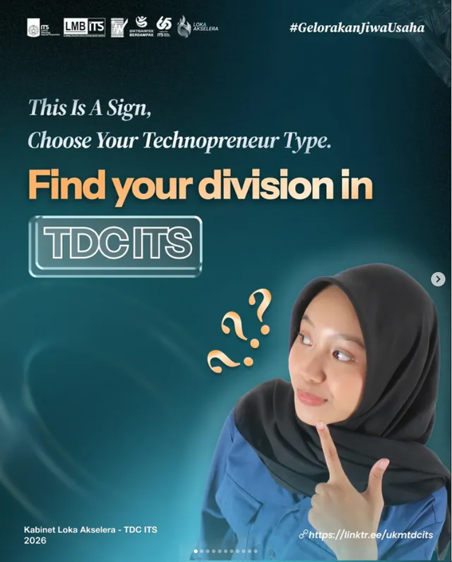

Technopreneurship
Development Center ITS
Belajar Bisnis Melalui Teknologi! #GelorakanJiwaUsaha

About Us
Kenali lebih dalam organisasi kewirausahaan terbesar di ITS Surabaya
TDC ITS adalah pusat pemberdayaan kewirausahaan mahasiswa yang menyediakan mentoring bisnis dan pengalaman dunia nyata. Dengan engagement media sosial lebih dari 180K+, TDC ITS memiliki kolaborasi dengan lebih dari 25 mitra, mencakup institusi, perusahaan, dan startup di berbagai sektor.
- Siap bergabung dengan komunitas kewirausahaan terbesar di ITS?
- Bergabunglah dan temukan potensi dirimu sebagai calon pemimpin bisnis masa depan.
- Bersama TDC Gelorakan Jiwa Usaha!
Visi
Mewujudkan TDC ITS sebagai Organisasi Kewirausahaan yang sinergis, kolaboratif, dan kompetitif demi mewujudkan pengembangan ekosistem kewirausahaan berkelanjutan sebagai katalisator perubahan masa depan.
Misi
- Menumbuhkan lingkungan kompetitif melalui pelatihan kompetisi dan bisnis.
- Mendorong keterlibatan aktif dalam berbagai peluang kolaborasi dengan berbagai pihak.
- Membangun hubungan sinergis serta menumbuhkan rasa kepemilikan antar anggota TDC.
Services
Program dan layanan unggulan yang TDC ITS hadirkan untuk mahasiswa dan ekosistem wirausaha

Business Mentoring
Sesi mentoring langsung bersama praktisi dan founder berpengalaman dari berbagai sektor industri.

Industry Connect
Akses jaringan lebih dari 25 mitra kolaborasi dari startup lokal hingga perusahaan nasional.

Competition Training
Pelatihan intensif untuk kompetisi bisnis, pitching, dan business plan tingkat nasional maupun internasional.
.JPG)
Events & Summit
Ekosistem komunitas aktif dengan workshop, talkshow, dan summit untuk memperluas wawasan bisnismu.
Kenapa Harus Bergabung dengan TDC ITS?
TDC ITS bukan sekadar organisasi ini adalah ekosistem nyata tempat kamu bisa belajar bisnis, membangun jaringan, dan tumbuh bersama komunitas wirausaha terbesar di kampus.
01 Apa itu TDC ITS dan siapa yang bisa bergabung?
TDC ITS adalah organisasi kewirausahaan mahasiswa di bawah ITS Surabaya. Semua mahasiswa aktif dari berbagai jurusan bisa mendaftar tidak perlu background bisnis, yang penting punya semangat untuk berkembang!
02 Apa keuntungan bergabung dengan TDC ITS?
Kamu mendapat akses ke mentoring bisnis, pelatihan kompetisi, jaringan 25+ mitra industri, pengalaman event nasional, dan komunitas yang mendukung pertumbuhan kamu sebagai calon entrepreneur masa depan.
03 Bagaimana cara bergabung dengan TDC ITS?
Pantau informasi open recruitment melalui media sosial resmi TDC ITS. Pendaftaran biasanya dibuka setiap awal semester dengan proses seleksi yang terbuka dan transparan untuk seluruh mahasiswa ITS.

Portfolio
Koleksi program, event, dan kolaborasi yang telah TDC ITS jalankan bersama komunitas dan mitra
- Semua
- Program
- Event
- Kolaborasi

{kind=link}
{kind=link}
{kind=link}
{kind=link}
{kind=link}